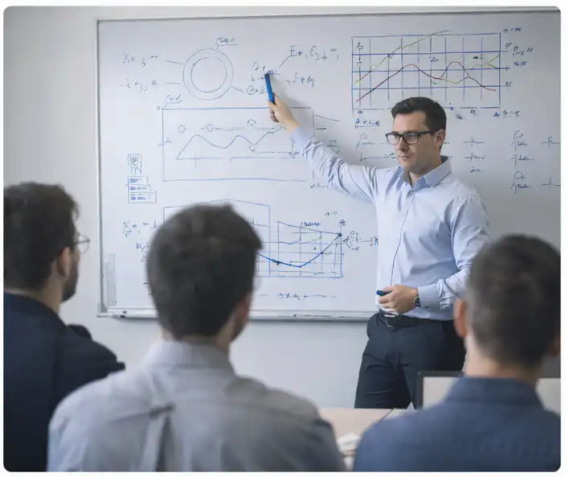
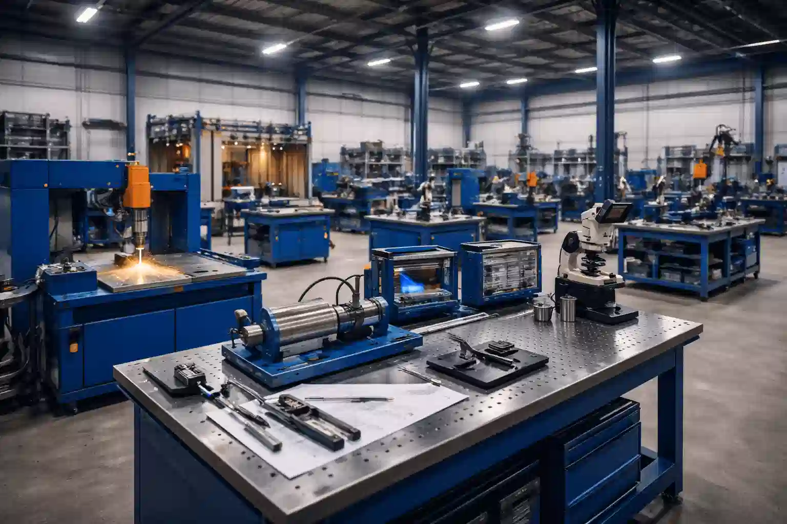
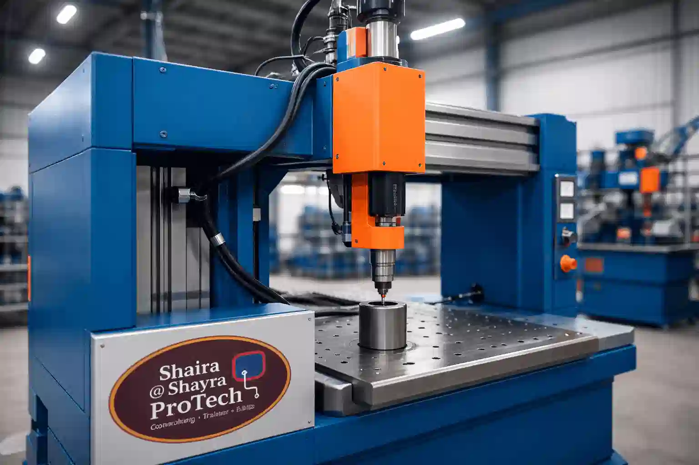

Fr
Fr العربية
العربية En
EnShaira @ Shayra ProTech – France
Nous développons des solutions innovantes à travers la formation en ingénierie, la recherche scientifique et le développement industriel
Nous transformons le savoir en solutions concrètes
De la formation et du conseil à la recherche & développement mécanique et industriel
Ce que nous proposons
🎓 Formation & développement des compétences
- Ateliers pratiques en usinage, soudage, CAO, thermolaquage, assemblage, métallurgie et contrôles non destructifs (CND).
- Formations académiques et professionnelles pour ingénieurs, techniciens et étudiants.
- Encadrement de projets industriels et académiques.
- Programmes de formation sur mesure combinant théorie, pratique et apprentissage par projet.
- Expérience d’enseignement en français et en anglais à différents niveaux académiques.
- Accompagnement et mentorat en conception mécanique, science des matériaux et techniques CND.
⚙️ R&D mécanique & innovation industrielle
- Conception, prototypage et optimisation de systèmes mécaniques et de machines spéciales.
- Analyse des matériaux, amélioration des procédés et résolution de problématiques industrielles.
- Conseil en organisation industrielle, efficacité de production et automatisation.
- Conception produit et gestion de production via SolidWorks, CREO, FreeCAD et ERP/MRP (Odoo).
- Conception et développement de machines et équipements sur mesure.
- Modélisation CAO et fabrication numérique du concept au prototype.
- Validation des conceptions par essais expérimentaux et simulations numériques.
🔬 Matériaux & solutions de procédés
- Traitements thermiques et de surface pour améliorer les propriétés mécaniques.
- Analyse du comportement des matériaux en conditions réelles d’utilisation.
- Développement et mise en place de lignes industrielles de thermolaquage.
- Mise en œuvre des techniques de contrôle non destructif (CND).
- Intégration de la caractérisation des matériaux aux exigences de conception.
- Conception et installation de laboratoires d’essais matériaux.
💼 Conseil industriel & gestion de projets

- Conseil technique et ingénierie pour accompagner la prise de décision industrielle.
- Définition des équipements, assistance aux achats et stratégies de maintenance.
- Coordination et pilotage de projets industriels de l’étude à la réalisation.
- Optimisation des ressources industrielles et des chaînes d’approvisionnement.
- Suivi et pilotage de projets R&D externalisés.
- Intégration des dimensions techniques, organisationnelles et économiques.
Projets industriels & de recherche clés
- Développement et application de techniques CND pour l’évaluation des matériaux et structures.
- Détection et caractérisation de défauts dans les procédés de fabrication avancés.
- Conception de lignes industrielles de thermolaquage avec recyclage des poudres.
- Développement de systèmes mécaniques et d’équipements de production sur mesure.
- Valorisation des résultats de recherche scientifique en solutions industrielles concrètes.
Nos valeurs & notre vision
🧠 Expertise & transmission du savoir : relier la théorie à la pratique industrielle.
🌍 Collaboration internationale : connecter la France, le Moyen-Orient et le monde.
💡 Innovation & durabilité : promouvoir une industrie performante et responsable.
🤝 Intégrité & indépendance : travailler avec transparence et engagement.
Travaillons ensemble
Que vous soyez un établissement de formation, un partenaire industriel ou un entrepreneur, nous vous accompagnons dans vos projets de formation, de R&D et d’optimisation des processus industriels.
« Là où la science rencontre l’industrie, l’innovation prend vie. »